实用数据结构(二)
这篇博文主要介绍一下fenwick树状数组
线段树
树状数组
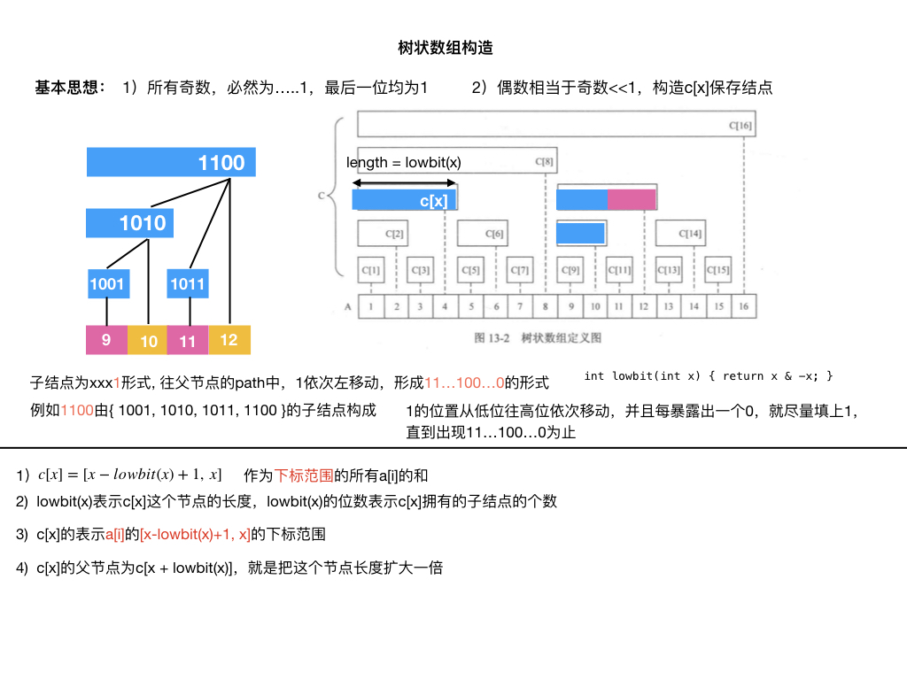
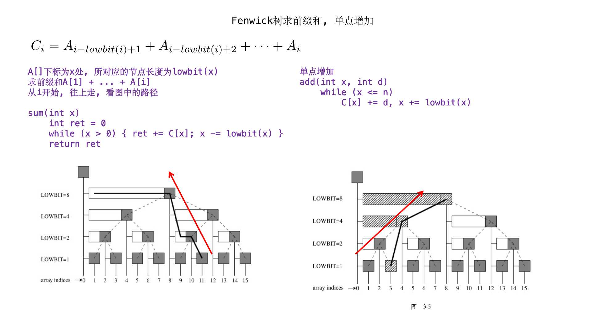
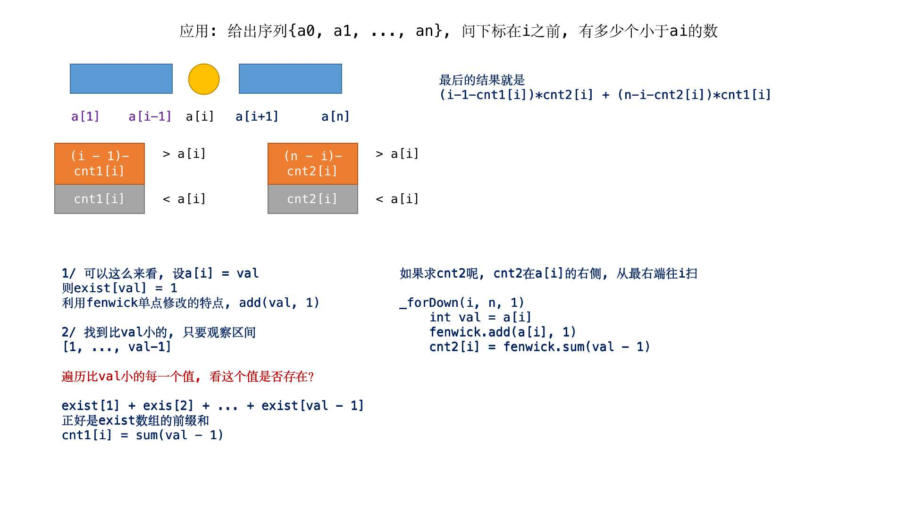
把待求的前缀和
1 | exist[1] + exist[2] + ... + exist[n] |
用fenwick树封装
fenwick成员函数中, 表示 的下标
1 | const int maxn = 200000 + 10; |
树状数组求解区间问题(一)
CH242
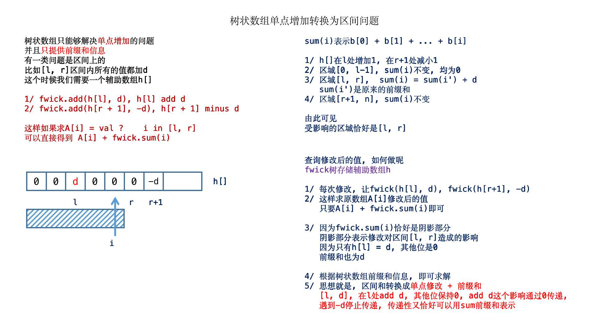
1 | const int maxm = 100000 + 10; |
树状数组求解区间问题(二)
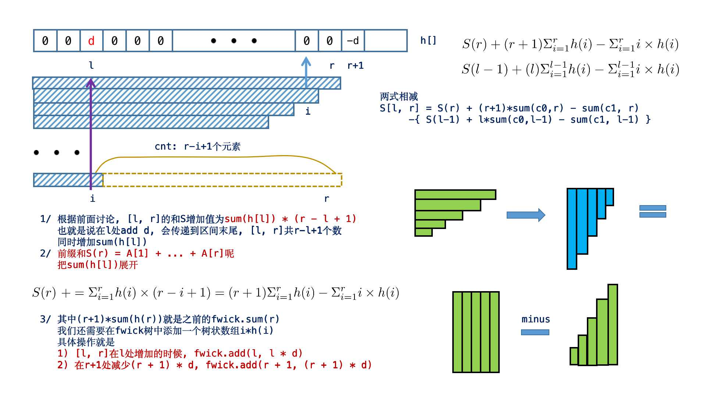
1 | const int maxn = 100000 + 10; |
树状数组解决区间第k大数问题
树状数组+二分
POJ2182
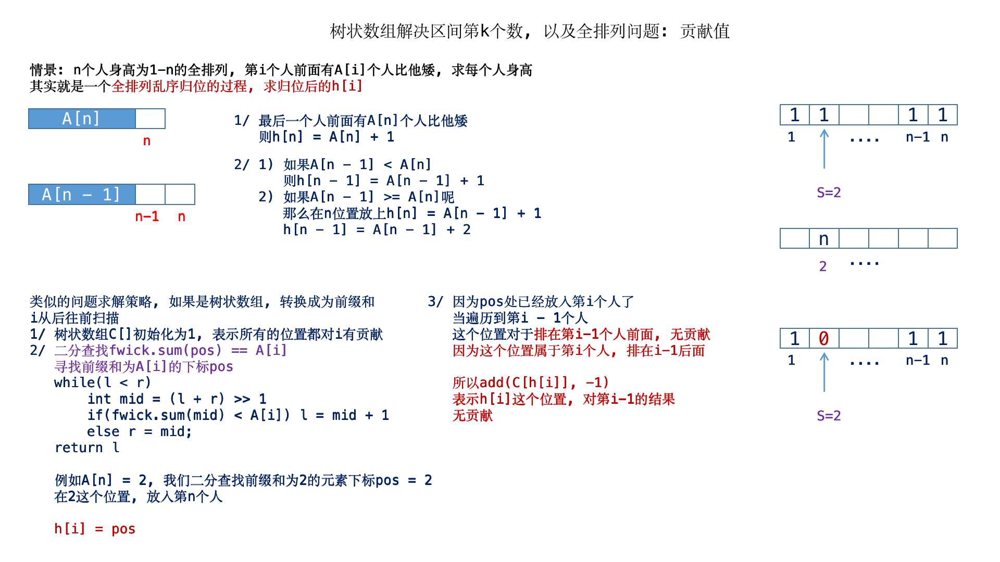
1 | #define lowbit(i) (i & (-i)) |
1 | const int maxn = 200000 + 10; |
树状数组处理栈(扩展域)
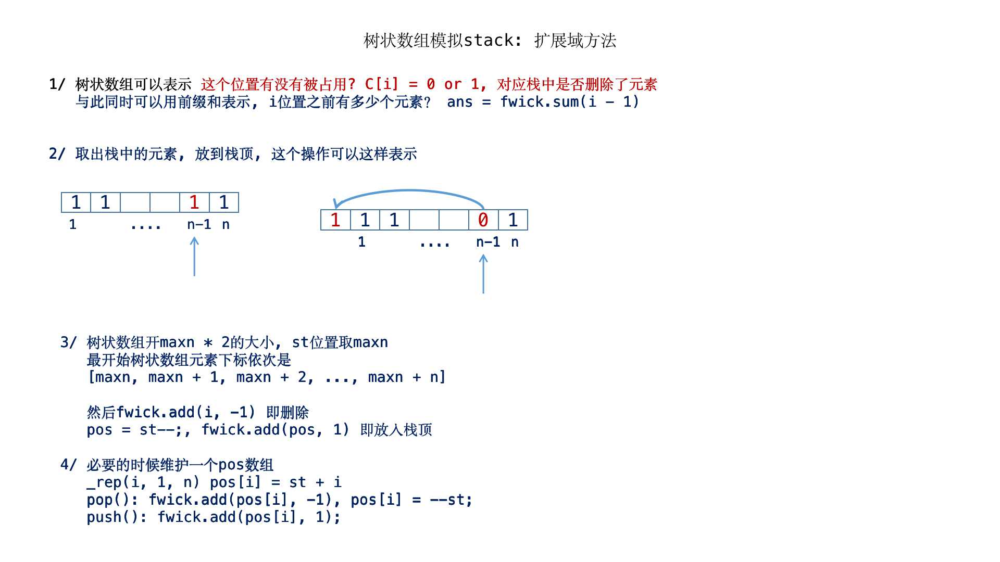
1 | #define lowbit(i) (i & (-i)) |
树状数组和康托尔排列
UVA11525
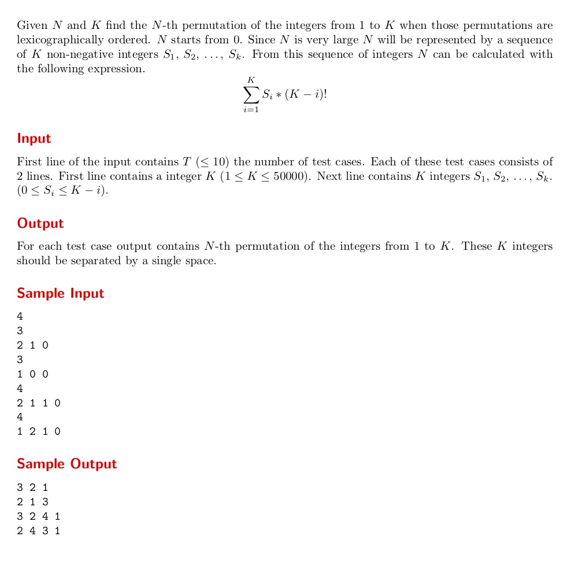
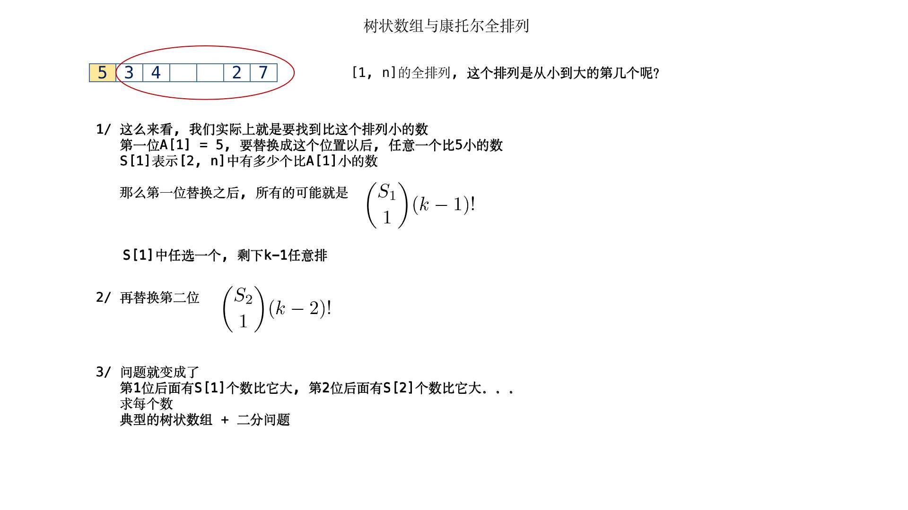
1 | const int maxn = 50000 + 10; |
并查集练习
并查集和坐标离散化
1 | const int maxn = 100000 + 10; |
并查集+贪心
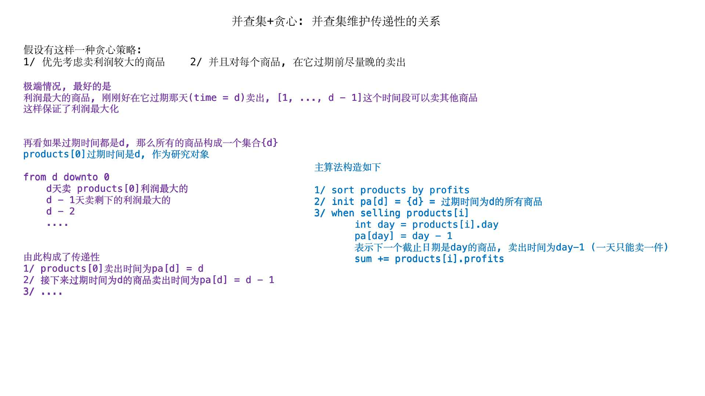
1 | const int maxn = 10000 + 10; |
并查集按秩压缩
并查集执行
1 | Union(int rootp, int rootq) |
操作之后
1 | pa[rootp] = rootq |
另外
1 | std::ios::sync_with_stdio(false); |
比scanf好用
1 | const int maxn = 30000 + 1; |
并查集处理奇偶运算
POJ1733
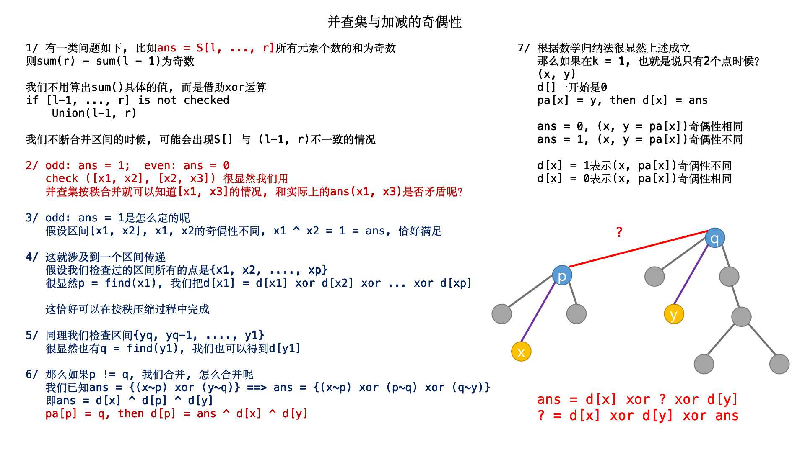
1 | const int maxn = 10000 + 10; |
并查集扩展域
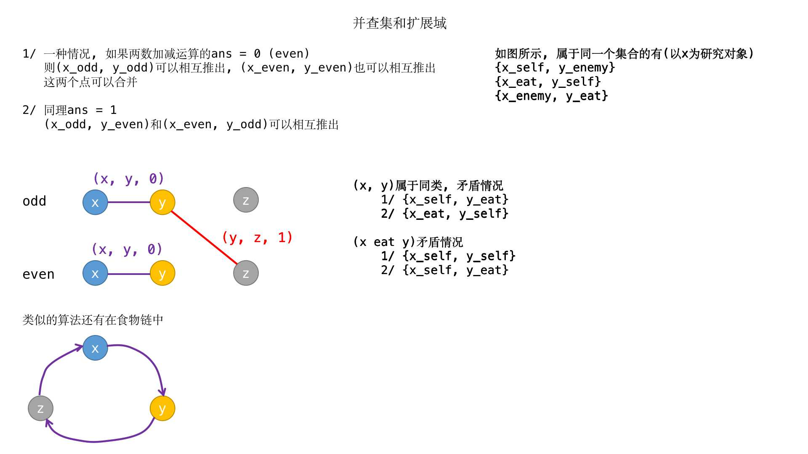
1 | const int maxn = (10000 + 1) * 2; |
扩展域多节点
1 | const int maxn = 50000 + 10; |
并查集删除与扩展域
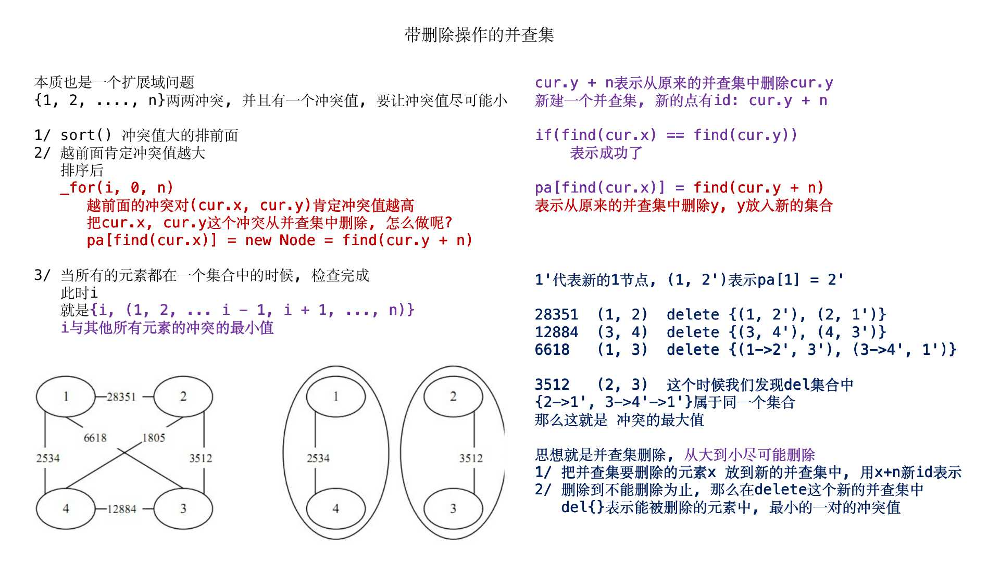
1 | const int maxn = 20000 + 10; |
POJ2912
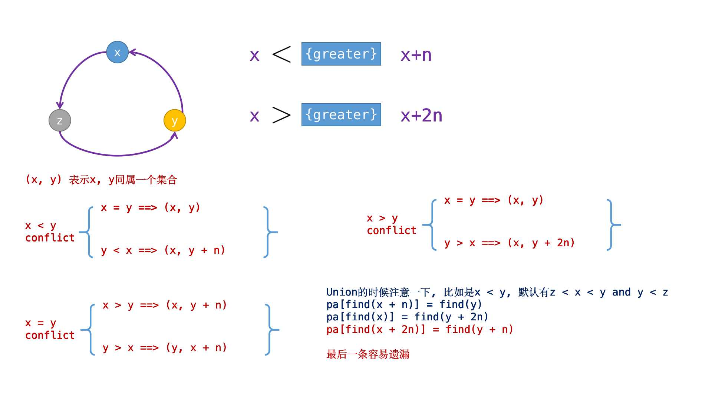
1 | const int maxn = 500 + 10; |
本博客所有文章除特别声明外，均采用 CC BY-NC-SA 4.0 许可协议。转载请注明来自 算法小站！
打赏
 微信
微信 支付宝
支付宝
相关推荐


评论